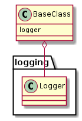
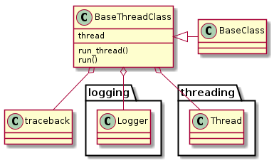

This is a module to hold base-classes for others to sub-class.
This is the primary base-class. Sub-classes inherit a logger attribute so that they can send operational logging messages to a file.

This is an extension to the BaseClass that adds a run_thread method that logs tracebacks in the event that an exception is raised. Classes that sub-class it need to implement a run method for the run_thread method to call and a method to put run_thread into a thread. Has a default thread attribute that contains a threading.Thread instance with run_thread as the target and daemon set to True.

This will raise a TypeError if the child class doesn’t implement run and it gets instantiated.
BaseThreadClass |
|
BaseThreadClass.thread |
|
BaseThreadClass.run_thread |
|
BaseThreadClass.run |
|
BaseThreadClass.reset |